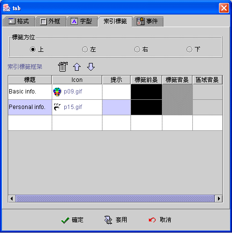
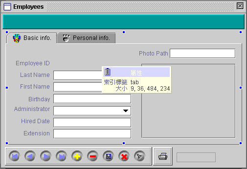
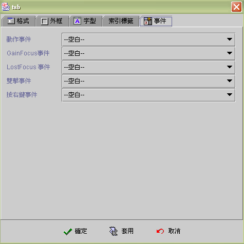

|

索引標籤 (Tab component)

共同屬性 (common properties)
索引標籤屬性 (Tab properties)
事件 (event)
索引標籤設計操作
(Tab component design)
運算式屬性存取
(formula get/set properties)
索引標籤元件(Tab component)
使用於資料項目需以不同標籤頁區分類別顯示時。所有元件包括索引標籤元件，皆可嵌入標籤頁(tabbed pane)中，成為隸屬於該標籤頁的元件。標籤頁中的元件，除了顯示
(display)及位置 (position) 由索引標籤所控管外，其餘使用方式及系統功能與一般工作視窗上的元件是完全一樣的。標籤頁中的元件與工作視窗元件可以滑鼠隨時移置互換，參閱
索引標籤設計操作
(Tab component design)。
索引標籤屬性 (Tab properties)


▲Top
事件 (event)
-
動作事件 (action event)：使用者按選不同的標籤頁
(selection changed) 時，即引發事件 (fire event)。
-
Gain
Focus 事件：當 Focus 移入標籤元件時，即引發事件 。
-
Lost
Focus 事件：當 Focus 移出標籤元件時，即引發事件 。
-
雙擊事件
(double clicked event)：當雙擊滑鼠的左鍵時，即引發事件。
-
按右鍵事件
(right clicked event)：當按下滑鼠右鍵時，即引發事件。

▲Top
索引標籤設計操作
(Tab component design)
-
建立索引標籤及標籤頁
(create tab component and tabbed panes)
將索引標籤 (Tab
component) 擺置 (layout)
於工作視窗中，雙擊滑鼠進入屬性設定頁，新增所需的標籤頁
(tabbed pane)。
-
切換標籤頁
(change
selected tabbed pane)
在索引標籤元件上按滑鼠右鍵，將滑鼠移至功能選單
(popup menu) 的【 調換標籤頁-- 索引標籤元件名稱
】選單項目，選取標籤頁標題，索引標籤元件將會把該頁調為目前選取標籤頁
(selected tabbed pane)。
-
配置元件
(layout component)
標籤頁中的元件，當滑鼠滑過 (roll over)
元件時以粉紅色框點標示，而位於工作視窗的元件，則以藍色框點標示。元件可以滑鼠移入或移出標籤頁，元件在移動置入 (drop)
時，以元件左上(left-top) 座標為準，當左上座標落入(hit)
標籤頁頁面區域時，則元件將嵌入標籤頁，否則移出至工作視窗。選取多個元件移入標籤頁時，該標籤頁頁面區域必須能容納所有移入的元件，否則無法移入。
-
由元件工具列置入：按選元件
(select component)；滑鼠顯示十字圖示；在標籤頁中按下
(clicked) 滑鼠置入元件。
-
由資料欄位置入：標示選取資料欄位以滑鼠拖曳至標籤頁，根據配置精靈視窗指示置入元件。
-
由資料來源配置：拖曳資料來源至標籤頁，根據配置精靈視窗指示選取配置元件。
-
由工作視窗移入標籤頁：以滑鼠選取多個元件或按住單元件拖拉至標籤頁。
-
由標籤頁移出至工作視窗：以滑鼠按住元件拖拉至工作視窗。
▲Top
運算式屬性存取
(formula get/set properties)
SetProp("元件名稱",
"屬性", 值) ：屬性設定。
SetProp("元件名稱",
"屬性", 值1, 值2)：屬性設定。
GetProp("元件名稱",
"屬性")：屬性讀取。
| Set
Properties |
| 屬性
(Properties) |
值1
(Value 1) |
值2
(Value 2) |
說明 (Descriptions) |
| enabled |
1 致能，0 失效 |
|
致能與失效。 |
| setfocus |
1 設定 Focus |
|
設定 Focus。 |
| visible |
1 顯示，0 隱藏 |
|
顯示與隱藏。 |
| repaint |
1 重繪，2
立即重繪 |
|
重繪。 |
| revalidate |
1 |
|
元件重整。 |
| enabledat |
N 第 N 個標籤頁 |
1 致能，0 失效 |
將第 N 個標籤頁，設定為致能或失效，N 由
1 起算。 |
| titleat |
N 第 N 個標籤頁 |
文字串 |
設定第 N 個標籤頁的標題，N 由 1 起算。 |
| selected |
N 第 N 個標籤頁 |
|
設定第 N 個標籤頁為目前標籤頁，N 由 1
起算。 |
| x |
正整數值 |
|
左座標位置。 |
| y |
正整數值 |
|
上座標位置。 |
| w |
正整數值 |
|
元件寬度。 |
| h |
正整數值 |
|
元件高度。 |
| xy |
正整數值 |
正整數值 |
左(Value1) 上(Value2) 座標位置。 |
| wh |
正整數值 |
正整數值 |
元件寬(Value1) 高(value2)度。 |
| Get
Properties |
| 屬性
(Properties) |
傳回值
(Return value) |
說明 (Descriptions) |
| isenabled |
1 致能，0 失效 |
致能與失效。 |
| isvisible |
1 顯示，0 隱藏 |
顯示與隱藏。 |
| selected |
N 第 N 個標籤頁 |
目前標籤頁 N，N 由 1 起算。 |
| selectedtitle |
字串 |
目前標籤頁的標題文字。 |
| x |
整數值 |
左座標位置。 |
| y |
整數值 |
上座標位置。 |
| w |
整數值 |
元件寬度。 |
| h |
整數值 |
元件高度。 |
▲Top
Copyright © 2001~
2004 Probe Technology . All Rights Reserved.
Questions, comments,
and suggestions to Service@probe.com.tw
|